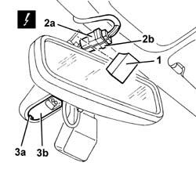
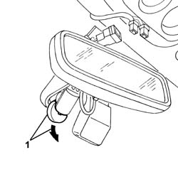
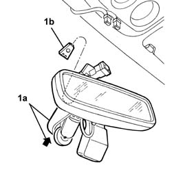
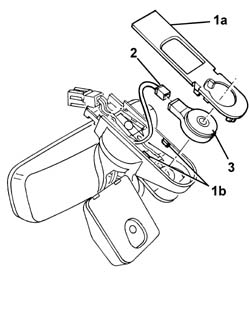

7065C58 SUPPORT for interior rear view mirror, rain sensor and demisting sensor. R.R.
- Path
- Procedures > 70 FITTINGS > 7065 SEAT BELTS AND ACCESSORIES > 7065C accessories and decorations > 7065C58 SUPPORT for interior rear view mirror, rain sensor and demisting sensor. R.R.
- Kind
- repair procedure (removal / refitting; the operation number is the code)
- Applies to
- all engines; all production periods
- Interactive page
- https://sloeber94.github.io/elrnDB-a156/en/#/3238988
Applies to: all engines; production: da 03/02 a 09/03, da 10/03
 Removing
Removing
 Refitting
Refitting1. Working on the interior rearview mirror mounting, remove the cover, releasing it from the retainers.
2. Disconnect the electrical connections (2a (2b).
 | Name | Connector |
|---|---|---|
2a | Rain sensor |
| Name | Connector |
|---|---|---|
2b | Demisting sensor |
3. Working on the recess (3a), open the cover (3b) of the rain sensor.

Applies to: all engines; production: da 03/02 a 09/03, da 10/03
1. Detach the rain sensor from the window and move it aside slightly.

Applies to: all engines; production: da 03/02 a 09/03, da 10/03
1. Lift (by tapping lightly) the comple mounting (1a), until it is released from the retaining block (1b) secured to the windscreen.

Applies to: all engines; production: da 03/02 a 09/03, da 10/03
1. Remove cover (1a) from retainers (1b) and remove.
2. Disconnect the electrical connections.
3. Remove the rain sensor.

Applies to: all engines; production: da 03/02 a 09/03, da 10/03
Refitting
RemovingCheck that the mounting is undamaged.
Have a new rain sensor ready.
Thoroughly clean the inside of the windscreen by the rain sensor housing. Use a degreasing product.
Connect the electrical connector to the new rain sensor, without removing the protection from the sensor's jelly-like surface.
Refit the cover and do up the retainers.
Fit the complete mounting in its seating and engage on the retaining block secured to the windscreen.
Remove the protection from the jelly-like surface of rain sensor, then place it in position.
Close the cover of the rain sensor.
Connect the electrical connections for the unit.
Fit the cover in its seating and engage the retainers.